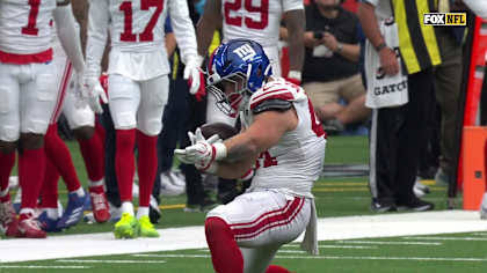
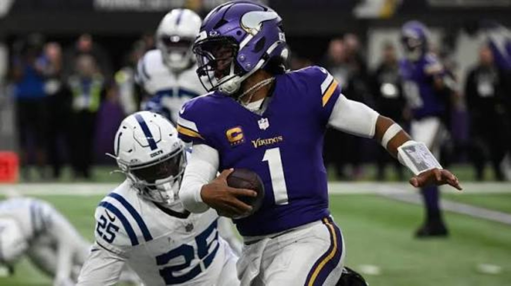
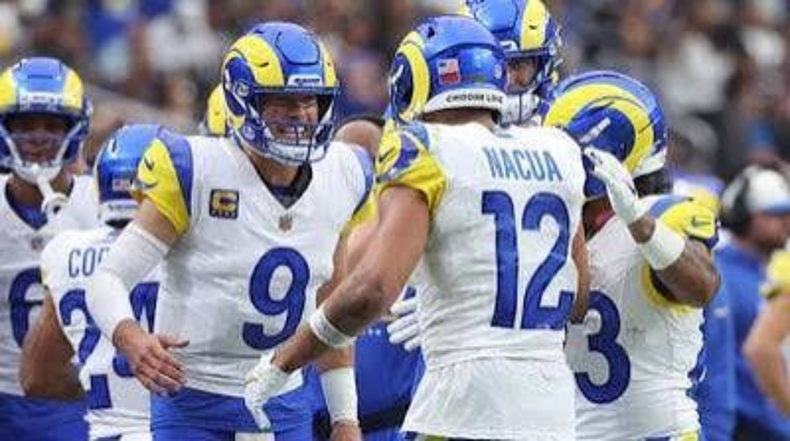
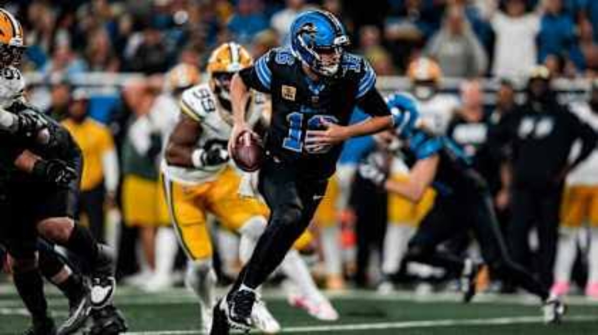
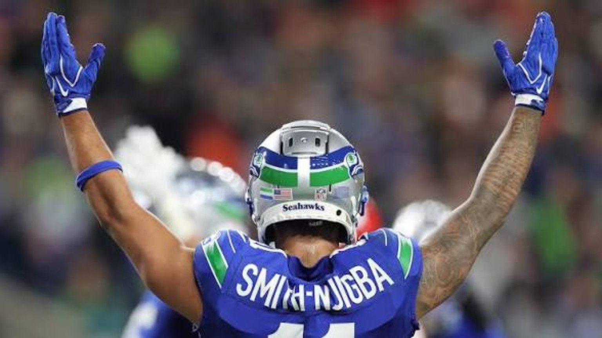

WEEK 7: UNBEATEN NO MORE.
San Francisco and Kansas City suffer their first defeats. Minnesota stays perfect. Twelve Sunday games, twelve stories—and a new test for the contenders.

ATLANTA EXPOSES THE FIRST CRACKS IN SAN FRANCISCO'S ARMOR
San Francisco entered Atlanta undefeated, but the Falcons rallied after trailing 14–12 at halftime and took control in the second half. Atlanta outscored San Francisco 17–6 after the break, turning a narrow deficit into the defining upset of the early season. Michael Penix Jr. threw three touchdowns, while the Falcons' defense produced four takeaways. It was the kind of complementary performance that turns a dangerous team into a legitimate problem for the rest of the conference.
Brock Purdy finished with 288 passing yards and a touchdown, but two interceptions undercut the production. Christian McCaffrey found the end zone yet managed only 39 rushing yards. That imbalance matters: when San Francisco cannot control down-and-distance on the ground, the offense asks Purdy to manufacture too many plays against a defense already expecting the pass.
For the 49ers, 6–1 is still an excellent position. The bigger question is how they respond when the first plan fails. Protection, ball security and second-half adjustments are now the weekly checklist. For Atlanta, this is a signature win because the Falcons did not merely hang around with an unbeaten opponent—they seized control and made San Francisco chase them.
PITTSBURGH WINS THE FIGHT IN THE TRENCHES
Pittsburgh did not need a spectacular offensive afternoon to leave Paris with a victory. The Steelers held New Orleans scoreless after halftime and reduced the Saints' rushing attack to just 18 yards. In a low-scoring game, that level of defensive control changes every decision: second-and-long becomes third-and-long, drives stall and the opposing quarterback has fewer manageable situations.
Jaylen Warren's 101 rushing yards gave Pittsburgh a reliable counterweight. Aaron Rodgers also reached a notable career milestone with passing touchdown No. 540, but the larger story was the team's willingness to win without forcing fireworks. The Steelers controlled the physical terms of the contest and protected their narrow margin.
New Orleans can point to a competitive score, but the inability to run the ball left little room for error. Pittsburgh's takeaway is that its defense and rushing attack can carry difficult road games; the next step is turning that control into more consistent scoring.
McCARTHY'S FIRST START OPENS A NEW CHAPTER IN NEW YORK

J.J. McCarthy's first start for the Giants ended with a dramatic overtime victory, and the quarterback was not asked to do everything alone. He threw for 252 yards, while Cam Skattebo provided 124 rushing yards and Malik Nabers added 111 receiving yards. That balance gave New York a functional offensive identity rather than a one-dimensional debut built entirely around its new quarterback.
Houston forced the issue late, with C.J. Stroud helping pull the Texans level and send the game to overtime. New York still had an answer. Devin Singletary's 30-yard touchdown run ended it, rewarding a Giants offense that kept leaning on its ground game when the stakes were highest.
One win does not settle a long-term quarterback evaluation, but it changes the conversation. McCarthy now has a credible first chapter, and New York has a template: support him with physical rushing and explosive targets. Houston's frustration is different—the Texans fought back, but could not finish after extending the game.
CLEVELAND FINDS AN ANSWER AFTER TENNESSEE'S LATE PUSH
The Browns needed nearly every second to finish this one. Tennessee tied the game in the final minute, but Cleveland immediately created a final scoring opportunity and Andre Szmyt delivered the winning field goal. Those closing possessions are where a contender distinguishes itself from a team that merely plays close games.
Deshaun Watson threw for 308 yards, including a key late connection with Harold Fannin Jr. that helped set up the kick. Tennessee had a major individual performance from Tony Pollard, whose three touchdowns kept the Titans in position to steal a win. Cleveland did not erase that production; it survived it and executed at the end.
At 5–2, the Browns have reason to believe their close-game composure is becoming a strength. Tennessee can take encouragement from Pollard's impact, but allowing a winning drive immediately after tying the game is the sort of detail that can define a season.
MIAMI FINALLY PUTS ITS OFFENSE TOGETHER
Miami's first victory arrived with a more complete offensive formula. Malik Willis threw two touchdowns to rookie Caleb Douglas and added another score on the ground. Ollie Gordon II rushed for 103 yards, giving the Dolphins the kind of run-pass balance that had been missing.
The Jets did not disappear. Geno Smith threw three touchdown passes, and New York stayed within striking distance until the end. But Miami's ability to generate scoring through different players made the difference in a game that demanded sustained execution rather than one isolated explosive play.
For Miami, the important development is not just ending the losing streak; it is finding an offensive identity worth repeating. For New York, a three-point loss with three passing touchdowns is especially frustrating because the scoring production was there, but the final result was not.
TAMPA BAY TURNS CAROLINA'S MISTAKES INTO A ROUT
Tampa Bay made this one lopsided by combining a productive running game with relentless punishment of Carolina's turnovers. Bucky Irving rushed for 106 yards and two touchdowns, while the Panthers gave the ball away four times. Once those extra possessions started piling up, Carolina had no realistic path back into the game.
Baker Mayfield returned and completed seven of 11 passes, but this was not a game that required him to carry the offense. The Buccaneers controlled the ground game, capitalized on mistakes and avoided putting unnecessary pressure on their quarterback. Bryce Young's two interceptions and lost fumble compounded Carolina's problems.
The Buccaneers showed how dangerous they can be when the defense creates short fields and the run game handles the rest. Carolina's priority is more basic: protect the football, keep games manageable and stop forcing its offense to chase huge deficits.
MINNESOTA STAYS PERFECT BY WINNING UGLY

An unbeaten team eventually has to win a game that does not look pretty. Minnesota did exactly that, moving to 6–0 in a defensive struggle against Indianapolis. Kyler Murray connected with T.J. Hockenson for a late touchdown, and Harrison Smith's closing interception ensured the Vikings would leave with their perfect record intact.
Jonathan Taylor rushed for 95 yards and a touchdown, providing much of the Colts' offensive resistance. But Indianapolis could not consistently string together the drives needed to put Minnesota under sustained pressure. Against a defense that can finish possessions with takeaways, that lack of rhythm is costly.
The Vikings' best argument as a contender is now their versatility. They do not need every game to become a shootout. Indianapolis, meanwhile, can compete physically but needs more dependable passing-game support when the running attack alone cannot dictate the scoreboard.
BURROW FLIPS THE GAME WITH 35 UNANSWERED POINTS
For one half, Baltimore looked in control. The Ravens led 13–0 at the break; then Cincinnati scored 35 consecutive points and transformed a difficult afternoon into a blowout. Joe Burrow threw four second-half touchdowns, showing how quickly the Bengals' passing attack can overwhelm an opponent once protection and timing settle into place.
Tee Higgins finished with 148 receiving yards, giving Burrow a high-level answer downfield and across the intermediate areas. Baltimore was without Lamar Jackson, and its offense could not respond once Cincinnati began stacking scores. The Ravens' inability to protect a double-digit lead made the final margin especially damaging.
Cincinnati's ceiling is obvious when Burrow and his receivers find rhythm. The challenge is starting games with that same urgency. Baltimore's concern goes beyond the absence of its starting quarterback: a 13-point lead should not turn into a 22-point defeat without a serious look at the second-half response.
BO NIX ADDS ANOTHER DIMENSION TO DENVER'S SURGE
Denver's third straight victory featured a reminder that Bo Nix can stress a defense in more than one way. His 62-yard touchdown run gave the Broncos a game-changing explosive play, forcing Arizona to account for quarterback movement as well as the passing game.
Trey McBride caught 10 passes for 111 yards for the Cardinals, a productive individual afternoon that never translated into enough team scoring. Denver was more efficient at turning its opportunities into points and gradually made the game feel less competitive than the early possessions suggested.
The Broncos are beginning to look comfortable winning through different scripts. Arizona still has reliable receiving production, but needs a stronger connection between moving the ball and finishing drives. Denver's next challenge is maintaining this balance against opponents that can better contain Nix on the perimeter.
LOS ANGELES STARTS FAST AND LEAVES VEGAS CHASING

The Rams took control early, building a 28–3 advantage before Las Vegas could establish a rhythm. Matthew Stafford threw three touchdowns, while Kyren Williams and Blake Corum each approached 100 rushing yards and reached the end zone. That combination allowed Los Angeles to attack through the air without abandoning the physical running game.
Kirk Cousins finished with 295 passing yards and two touchdowns, but much of the Raiders' offensive work came after the game had already tilted heavily toward the Rams. Las Vegas managed only 48 rushing yards, which meant there was little chance to slow the tempo or keep Stafford's offense on the sideline.
Four straight losses have erased much of the optimism from the Raiders' opening stretch. They need better starts and a credible rushing threat before the season slips further. The Rams, meanwhile, demonstrated how dangerous they are when Stafford has a lead and multiple runners can sustain it.
DETROIT FINISHES A DIVISIONAL FIGHT AT THE BUZZER

Detroit and Green Bay played the kind of NFC North game where every possession matters. Jake Bates' field goal as time expired gave the Lions a 20–17 victory and rewarded an offense that kept creating chances even when the scoreboard remained tight.
Jared Goff threw for 303 yards and two touchdowns to Jameson Williams. Amon-Ra St. Brown added 153 receiving yards, and Jahmyr Gibbs rushed for 116. Detroit's versatility forced Green Bay to defend the entire field; the Lions could move through the air, threaten with explosive receivers and keep the chains moving on the ground.
Green Bay was close enough to win, which makes the finish sting. Detroit's advantage was the ability to sustain its offense through different contributors and execute on the final possession. In a division where margins are thin, that kind of closing performance carries weight beyond one result.
SEATTLE SILENCES KANSAS CITY.

Seahawks 20, Chiefs 3. Our extended Sunday Night Football breakdown covers the defensive blueprint, Smith-Njigba’s breakout performance and what the result means for both teams.
READ THE FULL 4DK SNF DEEP DIVE →